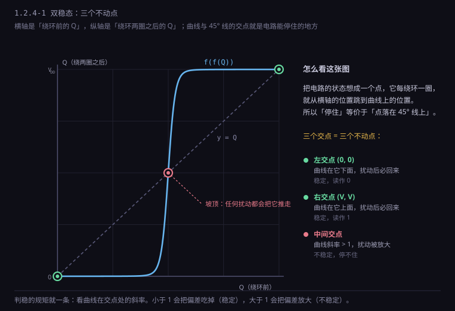
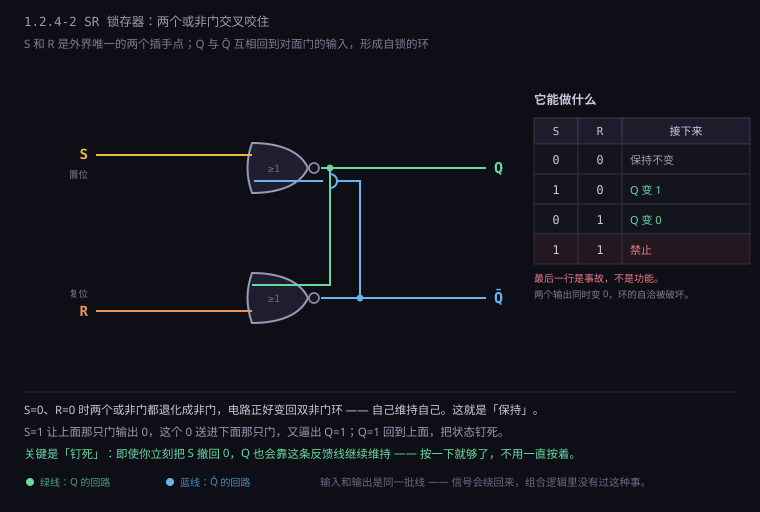
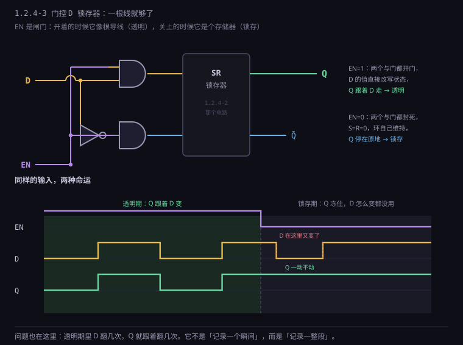
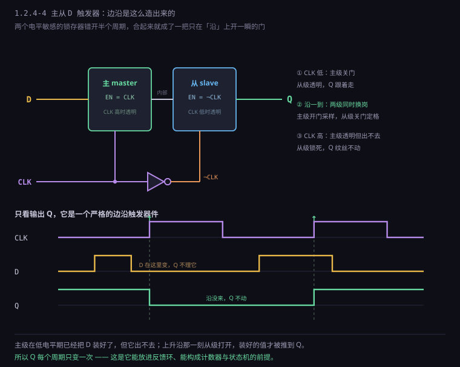
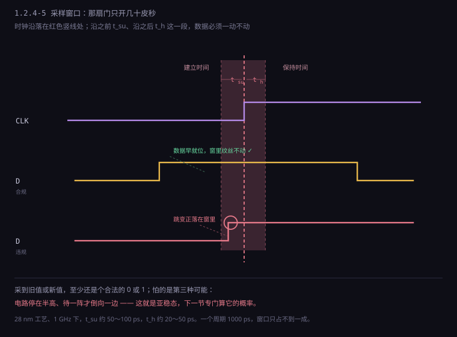

约 1.3 万字 · 6 张图 · 读完你能说清为什么两个非门接成环就能存住一个数、 看懂电平触发和边沿触发差在哪、并且明白「亚稳态」为什么是每个硬件工程师的噩梦
先把问题摆清楚。回头看上一节的加法器：给它 A = 0101、B = 0011，
输出线上就出现 1000。整个过程里没有任何「记住」的动作，
输出永远是输入的函数——同样的输入，必然给出同样的输出，一秒前发生过什么，它完全不关心。
这类电路有个正式名字：组合逻辑（combinational logic）。「组合」指的就是
「输出由输入的组合决定」，跟时间无关。
组合逻辑能做的事其实很多。加法、比较、译码、选择、编码，全都能用它完成， 而且快到极限——信号穿过几级门，几十皮秒就出结果。但它有个天花板： 它算不出「累计」。
举个最小的例子。你要做一个「按一下按钮，灯就换一个状态」的开关。
直觉的写法是：灯 = 灯 取反。写成电路就是把灯的输出来接一个非门，
再送回灯本身。这个电路在纸上完全合法，跑起来会怎样？
灯 = ¬灯
如果此刻 灯 = 1，那么下一瞬间 灯 = 0；
灯 变成 0 之后，下一瞬间 灯 = 1；
灯 变成 1 之后……
它会自己抽风。这不是电路的错，是你写的式子没有唯一解：
x = ¬x 在布尔代数里根本无解，可电路是物理的，它必须给出一个电压，
于是它就在两个值之间来回横跳，跳的频率由门延迟决定——几皮秒一个来回，
示波器上看就是一条糊掉的带子。
组合逻辑遇到无解的方程，不会报错，它会疯。
这个失败的例子其实透露了关键信息：把输出接回输入，电路中就出现了「环」。 有环就有反馈，有反馈才有可能记住东西——因为「现在的输出」会变成「下一刻的输入」， 时间被引进来了。这是从组合逻辑跨到时序逻辑（sequential logic）的唯一一道门。 但环不能乱接，接错了就是刚才那个抽风的振荡器。要让它稳定地记住， 环得满足一个条件：它必须有两个稳定的落脚点。
顺便交代一件历史。有了反馈环，其实不装时钟也能做计算—— 让每个环自己算完就通知下一个环，谁快谁慢各按各的节奏来， 这种设计叫异步电路（asynchronous circuit）。它在理论上更省电 （不动的地方真的不动，没有时钟在空转），速度也可能更快（按平均值跑，不按最坏值）。
但从 1980 年代起，整个行业几乎一边倒地转向了同步设计： 加一个全局时钟，所有触发器在同一个节拍上动作。原因不是同步更快， 而是同步更容易证明它是对的。异步电路的时序依赖于「每一级什么时候算完」 这个动态事件，一旦某条路径慢了一点，整个握手链就可能卡死或者丢事件， 而这种错误在仿真里极难复现。同步电路则把所有不确定性压缩成一个数字： 最长路径的延迟，只要它小于时钟周期，电路就是对的。
这个交换非常典型：用一点性能，换来了「可以静态验证」这个性质。 今天一颗芯片有几百万条路径，如果每条都要仿真到「它确实能跑对」， 一百年也做不完；而静态时序分析可以在一夜之间把每一条都算一遍， 给出「全部通过」或者「这三条不达标」。可验证性，比最优性值钱得多。 这条判断在软件工程里同样成立，后面讲编译器、讲测试的时候会反复出现。
把刚才那个环改成两个非门首尾相接：
┌──────┐ ┌──────┐
───▶│ NOT │───Q───▶│ NOT │───Q̄──┐
└──────┘ └──────┘ │
▲ │
└──────────────────────────┘
Q̄ = ¬Q ，同时 Q = ¬Q̄
看起来和刚才一样是「自己等于自己的反面」，为什么这个就能稳定？
因为这里有两个变量，不是一元的 x = ¬x，而是二元的联立：
Q = ¬Q̄
Q̄ = ¬Q
这组方程有两组解：Q=1, Q̄=0 和 Q=0, Q̄=1。
两个解都是稳定的——你把 Q 强行拉到 1，Q̄ 就被拉成 0，
Q̄ 是 0 又会让 Q 保持 1，自己维持自己。反过来同理。
这就像一支铅笔用两个手指夹住，往左倒或往右倒都行，倒下去就躺着不动了。
但要注意，除了这两个稳定点，还有第三个解：Q = Q̄ = 0.5·VDD，
也就是两个门都停在「半高」的中间状态。数学上它也是解，物理上电路也确实能短暂停在那儿，
但这个点在本质上是不可稳定的：任何一点点扰动（热噪声、电源波动、
甚至旁边一根线的串扰）都会把它推向左边或者右边，然后一路加速跑到底。
这种点叫亚稳态平衡点，像把铅笔尖朝下立起来——理论上能立住，
实际上你但凡呼吸一下它就倒了。

图里那三个圆圈，是整个数字世界最重要的三个位置。左右两个坑是「0」和「1」， 中间那个坡顶是「不知道」。一个电路只要能落在坑里，它就把一个比特存下来了； 而只要它有机会跑到坡顶上，它就有麻烦了。
到这里，记忆的物理本质已经清楚了：记忆不是「保存」，是「自我维持」。 没有哪个电容在存着电荷等你来读（DRAM 是另一回事，后面讲）， 这里的 1 是靠「我说我是 1，所以我让对面是 0，对面是 0 又让我确实是 1」这个循环撑住的。 它不需要外界不断喂能量，只要有电，它就自己撑着自己。 这是一种逻辑上的自洽，而不是物理上的储藏。 这个区别很值得记住，因为它解释了一个反常的现象： 断电之后，这种电路里的 1 会瞬间消失。它从来没有被「存」过，只是被「维持」过。
顺带说一句，这个双非门环有个致命缺陷：它没有「写入口」。 你只能用探针强行把某条线拉高或拉低，一旦松手，它就维持在被你按下的那个状态—— 但你没法用一根正常的信号线去命令它「存一个 1」。要能写入，得把「强行拉」这件事 做成一个正当的输入。这就引出了下一个装置。
在往下走之前，有个细节值得追问：为什么必须是两个非门？ 接三个行不行？
两个非门成环： Q = ¬(¬Q) = Q ✔ 恒等式，两组解，稳定
三个非门成环： Q = ¬(¬(¬Q)) = ¬Q ✘ 无解，必然振荡
四个非门成环： Q = ¬⁴Q = Q ✔ 又稳定了
规律很清楚：偶数个反相器成环才稳定，奇数个必然振荡。 道理还是那个「x = ¬x 有没有解」的问题：每绕一圈就反相一次， 偶数次反相等于没反，环里可以有一个自洽的值；奇数次反相等于要求「我等于我的反面」， 永远无解。
奇数环的振荡不是缺陷，是另一个非常有用的电路——环形振荡器。 1.2.2 讲非门兼职时提过一句，这里可以说得更实在： 把 3 个、5 个、101 个反相器接成环，它就稳定地以「1 ÷（2n × 单级延迟）」的频率振荡。 这个频率直接反映了工艺的快慢：同一张设计图，在快工艺角下振得快，慢工艺角下振得慢。 所以芯片里到处埋着这种小环，专门用来测量「这颗芯片到底跑多快」， 行话叫工艺监测环（process monitor ring oscillator）， 出厂测试和片上自适应调压都要读它。 一个「不能用」的电路，换个用途就成了测量仪器。
再说噪声容限。两个非门成环之所以可靠，关键在于环上的增益大于 1： 任何偏离稳定点的小扰动，绕环一圈会被放大，于是越跑越远，直到撞上电源轨。 如果环里的门增益不够（比如在极低电压下，反相器的传输曲线变得很平）， 放大就变得迟钝，环就可能在中点附近磨蹭很久——这正是低压下亚稳态概率飙升的原因。 本节第九节会再回到这一点，它是「降压省电」这条路线撞上的第一堵墙。
把双非门环里的两个非门换成或非门（NOR），每个门多出一个输入， 这两个多出来的输入就是「写入口」。电路长这样：一个门的输出接另一个门的一个输入， 另一个门的输出接回来；两个门的另一个输入分别叫 S（Set，置位）和 R（Reset，复位）。

逐个情况走一遍，这个电路就彻底通了。记住或非门的脾气： 只要有一个输入是 1，输出就是 0；只有全 0 才输出 1。
| S | R | Q | Q̄ | 这个状态叫什么 |
|---|---|---|---|---|
| 0 | 0 | 不变 | 不变 | 保持（Hold） |
| 1 | 0 | 1 | 0 | 置位（Set） |
| 0 | 1 | 0 | 1 | 复位（Reset） |
| 1 | 1 | 0 | 0 | 禁止（非法） |
第一行最妙，也最容易被忽略。S = 0、R = 0 的时候，两个或非门都退化成「非门」—— 因为它们各自的另一个输入是 0，输出就等于对面输入取反。于是电路正好回到上一节那个双非门环： 自己维持自己。这就是「保持」。 换句话说，SR 锁存器的默认状态是记忆，只有在你明确下命令（S 或 R 给 1）时才改写。 这一点和直觉相反：大多数人第一次看这个电路，会觉得「没有输入就是没有输出」， 其实没有输入恰恰是它最本分的工作状态。
第二行，S = 1。上面那个或非门有一个输入是 1，输出立刻变 0，所以 Q̄ = 0。 Q̄ = 0 送进下面那个或非门，它两个输入都是 0（R = 0、Q̄ = 0），输出变 1，Q = 1。 Q = 1 又送回上面那个门——但那个门已经有 S = 1 了，输出本来就是 0，不需要 Q 帮忙。 这是一个自锁的过程：一旦 Q 变 1，即使你马上把 S 撤回 0， Q 也会靠 Q̄ 的那条线继续维持 1。 这就是「写入」：你只需要按一下，不需要一直按着。
第三行对称，R = 1 把 Q 清零。第四行是事故现场，下一节专门讲。
有两件事值得停下来体会。第一，这个电路的「输入」和「输出」是同一批线—— Q 既是输出，又是内部那个环的一部分。这是它和组合逻辑最本质的区别： 组合逻辑里信号只能从输入流向输出，单向，像水管； 时序逻辑里信号会绕回来，像一条咬住自己尾巴的蛇。 正是这条回路让「现在的输出」能影响「下一刻的输出」，时间才被引进来。
第二，它的两个输出 Q 和 Q̄ 永远是相反的。这不是巧合，是设计的前提。 可如果两个输出同时变成 0，「永远相反」就不成立了，整个电路的自洽性崩了。 这正是第四行的问题所在。
SR 锁存器最早的用途，还不是存数据，而是给机械开关消抖。 这个用途值得单独讲，因为它把「记忆」这个概念用在了最反直觉的地方。
机械按键按下的一瞬间，金属弹片不是干净地接触，而是会在几毫秒里 「弹跳」十几次——通、断、通、断，每次几微秒。如果直接拿这根线去驱动一个计数器， 你按一次，它会数出七八个。
真实按键的电压波形（时间轴放大 1000 倍）：
──┐ ┌─┐ ┌───┐ ┌─┐ ┌──────────────────────
│ │ │ │ │ │ │ │
└─┘ └─┘ └─┘ └─┘
↑ 这几毫秒里弹了五六次，但人只按了一次
用两个交叉耦合的与非门（就是 SR 锁存器）就能彻底解决： 把按键的两端分别接到 S̄ 和 R̄，开关往上拨就置位、往下拨就复位。 关键性质是：一旦状态翻过去，后面那些弹跳就再也拉不回来了—— 因为第一下已经把环推向另一边，剩下的抖动都被「自锁」挡在外面。 电路输出的是一段干净的单次跳变，弹跳被吃掉了。
早期的 TTL 芯片 74LS279 就是四个这样的锁存器，专门干这件事， 便宜到几分钱。今天你在单片机教程里看到的「按键消抖」， 软件版是延时 20 毫秒再读一次，硬件版就是这个 SR 锁存器。 软件版用时间换，硬件版用状态换——两种办法，一个思路：别相信抖动的信号，等它稳。
S = 1 且 R = 1，同时命令「置位」和「复位」。上面那个或非门被 S 拉成 0， 下面那个被 R 拉成 0，于是 Q = Q̄ = 0。可这两个输出本该相反——电路进入了一个 自相矛盾的状态。矛盾归矛盾，物理上它确实能待在那儿（两个门都是「被外部按住的」）， 所以它不抽风，它只是撒谎：两个输出都宣称自己是 0。
真正的事故发生在你同时撤掉 S 和 R 的那一刻。两个门同时失去外部强制， 都想把输出拉回 1（因为另一个输入变 0 了）。谁先到？ 这取决于两个门的延迟——而两只「一模一样」的门，延迟在微观上永远不完全相等： 掺杂浓度差一点、氧化层薄一点、温度高半度，都会让其中一个快几皮秒。
S: 1 ─────┐
└──────────── 0
R: 1 ─────┐
└──────────── 0
↑
同时撤掉的那一刻，Q 和 Q̄ 开始赛跑
结果可能是 Q=1,Q̄=0，也可能是 Q=0,Q̄=1，
取决于哪只门快了 3 皮秒——而 3 皮秒的差别，
连芯片厂自己都测不出来。
这个现象叫竞争（race）。它的可怕之处不是结果错，而是 结果不确定：同一颗芯片，上午上电跑出来是 1，下午跑出来是 0； 这一片是 1，下一片是 0；甚至同一片、同一个温度，跑一万次里有一次是 0。 这种 bug 无法复现、无法调试、无法用测试覆盖，只能靠设计上禁止它发生。
所以 SR 锁存器的真值表最后一行不是「输出 0」，而是「禁止使用」。 这不是数学上的无解，是工程上的纪律：永远不要给出一对互相矛盾的命令。 这条纪律后来在所有时序电路里反复出现——你不能同时命令一个触发器「置 1」和「清 0」， 也不能同时让两个设备驱动同一根总线（1.2.2 讲三态门时那条「同一时刻只能有一个说话」， 是同一个道理的另一个版本）。
到这里，我们已经有了一个能存一个比特的装置。但它有两个输入，用起来很别扭： 想写 1 就拉 S，想写 0 就拉 R，还得时刻提防别同时拉两个。 而计算机里要存的东西只有一种形态——一根线上的 0 或 1。 能不能只给一根数据线，让它自己决定该置位还是复位？
能。办法是在 SR 锁存器前面加一层「翻译」：给一根数据线 D 和一个使能线 EN， 让电路自己算出该给 S 还是 R。
EN = 1 时： D = 1 → S = 1, R = 0 （写入 1）
D = 0 → S = 0, R = 1 （写入 0）
EN = 0 时： S = 0, R = 0 （两个都不动，保持）
这个翻译逻辑正好是两个与门：S = D · EN，R = ¬D · EN。
两个与门共用一个 EN，天然保证了 S 和 R 不会同时为 1——因为 D 和 ¬D 不可能同时为 1。
那个「禁止状态」被结构性地消灭了，不需要用户自觉遵守纪律。
这是工程设计里非常典型的一招：与其写一条「请勿同时按下」的说明书，
不如把电路改成「你根本按不下去」。

这个电路叫 D 锁存器（D latch），D 是 Data 的意思。 它的工作方式可以一句话概括：EN 为 1 的时候它是根导线，EN 为 0 的时候它是个存储器。
这个「像导线」的特性有个专门的名字：透明（transparent）。 EN = 1 期间，D 变成什么，Q 就跟着变成什么，中间只隔两级门延迟。 如果 D 在这段时间里翻了三次，Q 也会跟着翻三次。 它没有「只记录一个瞬间」的能力，它记录的是「整段时间」。 这一点在下一节会变成大麻烦。
顺便说，真实的芯片里这个电路很少用「与门 + 或非门」画出来的那种搭法， 而是用传输门（transmission gate）——一对 NMOS 和 PMOS 并联， 像一扇双向都能开的门，EN 控制开合。传输门版只用 6 只管子就能做出一个 D 锁存器， 比门级搭法省一半以上面积，而且没有那两级门延迟。 它在结构上就是一扇门加一个双非门环：门开的时候环被短路（跟着输入走）， 门关的时候环闭合（自己维持自己）。 这个画面比看逻辑图直观得多，建议记住这个版本。
现在问题来了。假设你要用 D 锁存器做一个 8 位寄存器，存一个字节。 8 个锁存器共用一根 EN，EN = 1 的时候，8 个输出一起跟着 8 个输入变。 这看起来没问题，直到你把它接进一个真实的系统：
假设要做一个「计数器」，每个时钟周期加 1：
┌─────────┐ ┌──────────┐
│ 寄存器 │────Q───▶│ 加法器 │
│ (8 个 │ │ Q + 1 │
│ 锁存器)│◀────────│ │
└─────────┘ D └──────────┘
▲
EN
EN = 1 的那一段时间里：
Q 变了 → 加法器算出 Q+1 → D 变了 → EN 还开着 → Q 又变 → 又加 1 → ……
在 EN 拉高的这半个周期里，它可能加了十几次。
这就是透明性带来的灾难。你想让它在每个周期只加一次，可它在你开着门的那段时间里
疯狂地自己喂自己。反馈回路 + 透明的门 = 振荡器，和本节开头那个
灯 = ¬灯 是同一类事故。
更准确地说，能不能出事故取决于延迟：如果环路的延迟足够长（比如信号要穿过一个 64 位加法器，需要五六百皮秒），而 EN 只开 200 皮秒，那么信号还没绕回来，门就关了， 侥幸没出事。这叫「靠延迟侥幸活着」，工程上绝对不能接受—— 换一种工艺、降一次电压、升一次温度，延迟变了，事故就冒出来了。
解决方向很清楚：别让它记录一整段时间，让它只记录一个瞬间。 门不要开一整段，只要在某一刻「咔哒」一下，采样，然后立刻关上。 这种器件叫边沿触发（edge-triggered）， 它的名字是触发器（flip-flop），以区别于电平敏感的锁存器（latch）。
| 对比项 | 锁存器 Latch | 触发器 Flip-Flop |
|---|---|---|
| 敏感方式 | 电平（EN 高时透明） | 边沿（上升沿或下降沿） |
| 开门时长 | 半个周期 | 理论上是零 |
| 透明性 | 有，输入能直通输出 | 无，输出只在沿上更新 |
| 能用在反馈环里 | 不能（会自激） | 能，这是它能构成状态机的原因 |
| 面积 | 小（6 只管） | 大（约 2 倍，20 只管上下） |
| 典型用途 | 流水线级间、SRAM 单元 | 寄存器、计数器、状态机 |
这张表最后两行藏着一个真实的工程权衡：锁存器更小更快，但难用； 触发器更大更慢，但好用。现代同步电路几乎全用触发器， 因为「好用」这一项压倒了一切——一张几十万行的 RTL 代码， 如果每个存储单元都要人工分析透明期会不会自激，没人做得动。 把复杂度收进标准单元库里，让设计者只需要在「沿」上思考，这是整个行业用面积换来的秩序。
不过在芯片内部，锁存器并没有消失。CPU 流水线的级与级之间常常用锁存器 （行话叫「时间借用」，time borrowing：前一级算得慢，可以借用后一级的一部分时间， 因为锁存器是透明的，晚到的信号还能赶上），SRAM 的存储单元本身就是一个 极简的锁存器（下一部讲存储器时会看到）。触发器是给人用的，锁存器是给机器省面积用的。
「时间借用」这个机制值得展开一点，因为它是锁存器唯一真正的优势所在。 假设有两个相邻的流水级，逻辑延迟分别是 800 ps 和 200 ps，时钟周期 1000 ps。 用触发器的话，第一级勉强卡在 1000 ps 里（还没有算建立时间，实际上已经违例）， 第二级却浪费了 800 ps。触发器是「一刀切」的：每一级都被同一个周期约束， 谁也不能多借、谁也不会少要。
换成锁存器，情况就变了。锁存器在高电平期间是透明的， 第一级的信号可以在时钟沿之后继续「流」进第二级，只要在第二级关门之前到达就行。 于是 800 + 200 一共 1000 ps 的工作量，可以压在同一个周期里做完—— 快的级把时间借给慢的级，整个流水线的节拍由「平均值」而不是「最坏值」决定。 这就是为什么 1990 年代的 Alpha 21264、Pentium 4 这些追求极致频率的 CPU， 内部大量使用锁存器而不是触发器。
代价是设计难度陡增：每一级的时序不再是「独立的」，而是和邻居纠缠在一起， 时序分析工具必须按「锁存器到锁存器」的整条路径算，不能简单地逐级检查。 到了 2000 年代后期，随着设计规模爆炸、工期压缩， 业界又集体退回了触发器——不是锁存器不好，是没那么多工程师能耗得起这个时间。 又一次，「通用好维护」打败了「理论最优」。
这个区别在分立器件时代留下了很清晰的痕迹，看老型号就能分辨： 74HC373 是八 D 锁存器，74HC374 是八 D 触发器， 引脚几乎一样，只差一个字母，内部结构完全不同。 373 的 LE（latch enable）是高电平透明，374 的 CLK 是上升沿采样。 很多初学者照着 373 的时序写代码、换成 374 就全错，原因就在这里。 同一份真值表，两种时序语义，这是「电平」和「边沿」这道分水岭最日常的一次显形。
那么，怎么用两个「电平敏感」的零件，拼出一个「边沿触发」的东西？ 这个思路非常漂亮，值得慢慢拆。
答案是把两个 D 锁存器串起来，让它们的使能信号相反：
第一个叫主（master），EN 接 CLK；第二个叫从（slave），EN 接 ¬CLK。
中间隔一道，外面看起来就成了边沿触发。

按时间顺序走一遍，这是本节最需要亲手推一遍的地方：
① CLK = 0（低电平期）
主锁存器：EN=0 → 锁死，保持上一拍存的值
从锁存器：EN=1 → 透明，输出 Q 跟着主锁存器的输出走
（此时 D 的新值被主锁存器挡在门外，进不来）
② CLK 由 0 变 1（上升沿，那一瞬间）
主锁存器：EN 变 1 → 打开，开始采样 D
从锁存器：EN 变 0 → 关上，把刚才的值锁死
两者交换角色的这一刻，Q 定格了。
③ CLK = 1（高电平期）
主锁存器：透明，D 怎么变它就怎么变（但它只影响内部，出不去）
从锁存器：锁死，Q 保持不变
④ CLK 由 1 变 0（下降沿）
主锁存器：关上，把高电平期采到的最后一个值锁死
从锁存器：打开，把这个值推到输出 Q
看出问题了吗？这个结构在 CLK 上升沿把值推出去， 但在 CLK 下降沿又把「高电平期间 D 变成的那个新值」推出去。 也就是说，它每个周期输出会变两次——一次在上升沿、一次在下降沿。 这不对，我们要的是每周期一次。
修法是把第二级的使能改掉：从锁存器不用 ¬CLK，
而是用一个「只在上升沿之后短暂打开」的信号。这就引出真实的实现方式：
用时钟的反相和延迟做出一个窄脉冲，或者更常见的做法——
在芯片库里，边沿触发触发器是用传输门和时钟的互补对直接搭的，
结构上仍然是主从，但使能信号取的是「CLK 与 ¬CLK 的重叠区」，天然只在一个沿上开一条缝。
图 1.2.4-4 画的是它的功能结构：两级锁存器、两个相反的使能。 真实的六管主从单元（每级三个传输门 + 一个反相器环）就是按这个时序接起来的， 它在 CLK 上升沿把 D 送进主级、同时把从级关上，之后的整个高电平期和低电平期， 输出都不再变化。这就是我们想要的「一周期一变」。
现在回头看 1.2.3 留下的那个坑：组合逻辑算完就忘。加上触发器之后， CPU 的骨架就清楚了——
┌──────────────┐ ┌──────────────┐
│ 触发器阵列 │───────▶│ 组合逻辑 │
│ （当前状态）│ │ （算出下一态）│
└──────────────┘ └──────────────┘
▲ │
└───────────────────────┘
每个时钟沿搬运一次
这个「触发器 → 组合逻辑 → 触发器」的夹心结构，是所有同步数字电路的基本形态， 没有例外。CPU 是这样，GPU 是这样，你手机里的每一个模块都是这样。 组合逻辑负责「算」，触发器负责「记」，时钟负责「什么时候记」。 三者分工明确，缺一不可。
这个结构还直接解释了 1.2.3 里那个「关键路径决定主频」的结论： 信号从上一排触发器出发，穿过组合逻辑，必须在下一个时钟沿到来之前稳定下来。 时钟周期 = 组合逻辑最长路径 + 触发器的建立时间 + 一点余量。 所以提高主频的本质，就是把组合逻辑切得更碎——也就是加深流水线。 这也是为什么 CPU 从 2000 年代的 30 级流水线，又退回到今天的十几级： 切太碎，触发器本身的开销和流水线冒险的代价反而吃掉了收益。
还有两个小问题要收尾。第一，为什么大家默认用上升沿？ 没有必然原因，纯粹是习惯。用下降沿触发的触发器在库里一样有， 逻辑功能完全对等，只是整个设计要统一约定一个沿—— 如果一个模块用上升沿、另一个用下降沿，中间交接的信号就会差半拍， 时序分析会变得极难。同步设计的第一条纪律就是「全芯片只认一个沿」。
第二，同一个时钟能不能两个沿都用？能，而且这是 DDR 内存的核心技巧。
普通 SDR：只在上升沿传数据，一个周期传 1 次
CLK ‾‾|__|‾‾|__|‾‾
数据 D0 D1 D2 每周期 1 个
DDR：上升沿和下降沿都传，一个周期传 2 次
CLK ‾‾|__|‾‾|__|‾‾
↑ ↓ ↑ ↓
数据 D0 D1 D2 D3 每周期 2 个
DDR 这个名字（Double Data Rate，双倍数据率）就是字面意思： 时钟频率没变，但因为两个沿都用上了，数据率翻倍。 DDR4-3200 的「3200」指的是每秒 32 亿次传输， 而它的时钟其实只有 1600 MHz——很多人以为 3200 就是频率，这里差了一倍。 这个技巧的代价是：两个沿采样的窗口各短了一半，时序余量更紧， 所以 DDR 的 PCB 布线要求（等长、阻抗匹配）比 SDR 苛刻得多。 省下来的频率，是用布线精度买回来的。
上一节已经提到过建立时间（setup time），这里必须把它讲透， 因为它是整个同步设计的物理基础，也是「主频上限」这个词的真正来源。
触发器在时钟沿采样，听起来像是在那一瞬间「看了一眼」D 就记住了。 但物理上不可能：要让内部的双稳态环翻转到新状态，需要一个过程， 而这个过程要求 D 在时钟沿之前就已经稳定、并且在时钟沿之后还要再稳定一小会儿。

量级感很重要。在 28 纳米工艺、1 GHz 主频下，一个触发器的建立时间大约是 50～100 皮秒，保持时间是 20～50 皮秒。 而一个时钟周期是 1000 皮秒。也就是说，触发器要求输入在 5% 到 10% 的周期里保持稳定， 剩下的 90% 时间随便你怎么折腾。这个比例听着还挺宽松，但别忘了， 关键路径的延迟是几百皮秒，两次采样之间的余量本来就只有几十皮秒， 这几十皮秒里还要再让出建立时间——这就是为什么超频一格就蓝屏。
一个时钟周期 T = 1000 ps（1 GHz）
├─ 组合逻辑延迟 ─┤├ 建立时间 ├
0 900 1000 (ps)
↑ ↑
数据到位 时钟沿到来
余量 slack = T − 逻辑延迟 − 建立时间 − 时钟偏斜
= 1000 − 900 − 80 − 20 = 0 ps ← 刚好卡死，随时崩
这段算术就是静态时序分析（STA）的核心。「时序收敛」这个词， 说的就是让上面那个 slack 在所有路径上都大于零。 一颗现代 CPU 有几百万条这样的路径，工具要一条一条算，一条不达标就不能流片。 设计者熬夜改的，往往就是那几条 slack 为负的路径。
还要注意那个「时钟偏斜」（clock skew）。时钟信号要走线到芯片上百万个触发器， 不可能同时到达——离时钟源近的早到一点，远的晚到一点，差几十皮秒很正常。 这直接吃掉余量：早到的触发器会提前关门，晚到的数据就进不去。 所以芯片里有一整套「时钟树」（clock tree）专门用来把偏斜压到最小， 它消耗的功耗能占到全芯片的 20%～30%。这个数字很惊人： 有三分之一的电，只是用来喊一声「到点了」。
建立时间和保持时间的违例，修法完全相反，这一点很有意思。 建立时间违例（数据到得太晚）说明路径太长， 修法是「让它更快」或者「给它更多时间」：换更强的驱动、减少逻辑级数、 把这条路径拆成两级流水线、或者干脆降主频。
保持时间违例（数据变得太早）就反过来了：说明路径太短。 上一排触发器的输出几乎是瞬间就到了下一排的输入端，在时钟沿之后还在变， 把刚要锁住的值冲掉了。修法只能是「让它更慢」——在路径上故意插延迟单元 （两只串联的反相器，或者一只缓冲器）。
建立违例：路径太长 → 加缓冲、拆流水线、降频（让它变快）
保持违例：路径太短 → 插延迟单元（让它变慢）
两条法则完全相反，所以不能靠调时钟解决所有问题。
降主频能修建立违例，但对保持违例毫无帮助——
因为保持违例和周期无关，只和「沿之后的那一小段」有关。
这就是为什么「超频」这件事比想象中危险：提高频率会压缩周期， 让原本刚好通过的建立时间余量变成负数，而保持时间几乎不受影响—— 所以超频失败的表现通常是「跑一会儿就崩」，而不是「一开机就黑屏」。 它是在赌物理余量，而余量是随温度漂移的。 温度升高会让晶体管变慢（迁移率下降），于是原本够用的余量在机器热起来之后就不够了。 这就是为什么很多「超频稳定」的机器，在夏天会莫名其妙地重启。
建立时间和保持时间给出了一个硬性要求：数据不能在采样窗口里变化。 那么，如果它偏偏在窗口里变了呢？
回到图 1 那三个小球。数据在窗口里变化，等于你在小球正要滚进左边坑的时候， 突然把地面往右掀了一下。小球可能滚进右边坑（采到新值），可能滚回左边坑（采到旧值）， 也可能——停在了坡顶上。
停在坡顶上就是亚稳态（metastability）。此时触发器的输出既不是 0 也不是 1， 而是介于两者之间的某个电压，而且这个电压会停留一段时间，然后才慢慢倒向一边。 停留多久？理论上是指数分布的，没有上限。
亚稳态的「停留时间」服从指数分布：
P(停留超过 t) ≈ e^(−t/τ)
τ 是工艺常数，大约几十皮秒。所以：
停留超过 100 ps 的概率 ≈ 1/10
停留超过 500 ps 的概率 ≈ 1/5000
停留超过 1 ns 的概率 ≈ 1/10⁸
停留超过 2 ns 的概率 ≈ 1/10¹⁶
看起来 1/10¹⁶ 已经小到可以忽略？
但一颗 3 GHz 的芯片，每秒有 3×10⁹ 次采样机会。
算下来平均每 40 天就会撞上一次。
这就是亚稳态最阴险的地方：它不是一个「会不会」的问题，是一个「多久一次」的问题。 概率再小，架不住采样次数多。工程上用一个指标来衡量它： MTBF（mean time between failures，平均无故障时间）。
MTBF ≈ e^(t_r/τ) / (T₀ · f_clk · f_data)
t_r = 留给它恢复的时间（多给一级触发器，就多一个周期）
f_clk = 时钟频率
f_data = 数据变化的频率
T₀ = 与工艺相关的常数，约 10⁻¹⁰ s
代入 t_r = 1 ns、f_clk = 1 GHz、f_data = 100 MHz：
MTBF ≈ e^(20) / (10⁻¹⁰ × 10⁹ × 10⁸) ≈ 4.8×10⁸ / 10⁷ ≈ 48 秒
—— 每 48 秒崩一次，完全不能用
再串一级触发器，t_r 变成 2 ns：
MTBF ≈ e^(40) / 10⁷ ≈ 2.4×10¹⁰ 秒 ≈ 745 年
—— 消费电子够用了，医疗和航天还不敢赌
串两级（t_r = 3 ns）：
MTBF ≈ e^(60) / 10⁷ ≈ 1.1×10¹⁹ 秒 ≈ 3600 亿年
—— 宇宙年龄的二十几倍，可以了
「两级同步器」这个标准做法就是这么来的：任何跨时钟域的信号， 先串两个触发器再说。第一个可能进入亚稳态，但它有一整个周期的时间恢复； 到第二个触发器的时候，绝大多数情况下已经稳定了。指数函数的威力在这里体现得淋漓尽致—— 多给一个周期，MTBF 就涨了十几个数量级。
这个计算还解释了一件事：为什么异步信号进入同步世界必须是「慢」的。
上面算例里 f_data = 100 MHz，如果数据每纳秒都在变（1 GHz），
MTBF 会再降一个数量级。所以按键、外部中断、跨时钟域的总线握手，
全都要靠「信号变化慢」或者「加握手协议」来换取可靠性。
直接拿一根异步信号去驱动逻辑，是新手最爱犯的错，也是产品在现场随机死机的经典成因。
亚稳态还有一个更麻烦的版本，值得单独提一句：多位信号跨时钟域。 单个比特加两级同步器就能搞定，但如果你要传的是一个 8 位计数器， 麻烦就来了：
源端计数器正在从 7 变成 8：
7 = 0111
8 = 1000
四位全部同时翻转
目的端采样时，四位各自的同步器恢复快慢不同，
可能采到 0111、1000，也可能采到 1111（= 15）或 0000（= 0）
—— 一个从未存在过的值。
这叫数据合并风险（data incoherency）。它比单比特亚稳态更阴险， 因为每个比特单独看都是「对的」，只是组合起来是个幻觉。 工程上的解法非常优雅：别传二进制，传格雷码。
格雷码的构造规则是「相邻两个数只有一位不同」：
| 十进制 | 二进制 | 格雷码 | 相邻变化了几位 |
|---|---|---|---|
| 0 | 000 | 000 | — |
| 1 | 001 | 001 | 1 |
| 2 | 010 | 011 | 1 |
| 3 | 011 | 010 | 1 |
| 4 | 100 | 110 | 1 |
| 5 | 101 | 111 | 1 |
| 6 | 110 | 101 | 1 |
| 7 | 111 | 100 | 1 |
因为相邻值只差一位，采样时最多只会有一个比特处在亚稳态， 而其他位都是明确的老值或新值。于是采到的结果只可能是「老值」或「新值」， 永远不可能是中间那个幻觉值。把「多位同时变化」这个难题， 降维成了「一位可能不确定」这个已知问题。
这个技巧最著名的应用是异步 FIFO：写端和读端用两个完全独立的时钟， 写指针和读指针各自转成格雷码再跨到对面。你的电脑里，USB 控制器到内存、 网卡到协议栈、CPU 到 PCIe，所有这些「两个时钟域之间搬数据」的地方， 底下都藏着一个异步 FIFO 和两个格雷码指针。 它不出现在任何用户可见的界面上，但整个外设世界就靠它接通。
一个触发器存一个比特。把 32 个并排放在一起，共用一根时钟，就是一个
32 位寄存器——这也是汇编语言里「寄存器」这个词的物理来源。
你写 MOV EAX, 5，CPU 做的事就是：把 5 送到 EAX 那 32 个触发器的 D 端，
等下一个时钟沿，32 个触发器同时采样。就这么简单，没有任何魔法。
再往上堆一层。CPU 里有几十个寄存器（x86-64 有 16 个通用寄存器， ARM64 有 31 个），它们不能各自独立地接在总线上——那样需要的线太多。 真实做法是做一个寄存器堆（register file）：一小块带多个读写端口的存储器， 读的时候给出编号，数据就出来；写的时候给出编号和数据，下一个时钟沿写进去。
寄存器堆的接口（典型 RISC 风格）：
读端口 A： 地址 RA（5 位，选 32 个之一） → 数据 RD_A
读端口 B： 地址 RB → 数据 RD_B
写端口 ： 地址 RW + 数据 WD + 写使能 WE
「2 读 1 写」是最常见的配置，因为一条典型的
三地址指令要读两个源操作数、写一个目的操作数：
ADD R1, R2, R3 ; R1 ← R2 + R3
↑ ↑ ↑
写 读 读
这个「2 读 1 写」的规格不是随便定的，它是指令格式倒推出来的硬件需求。
指令里能写三个寄存器号，硬件就必须能同时支持两个读一个写。
这也是为什么有些架构（比如早期的 x86）指令是「2 操作数」的
（ADD EAX, EBX 意思是 EAX ← EAX + EBX），
硬件上就只需要 1 读 1 写——指令编码的形态，直接决定了寄存器堆的端口数，进而决定了它的面积和功耗。
这条因果链从软件一直贯到硅片，是「计算机是分层设计出来的」这句话最具体的例子。
寄存器堆内部其实就是一排 D 锁存器加一个译码器： 地址经过译码器变成「第几个锁存器开门」的一根线（1.2.2 讲的译码器在这里派上用场）， 然后数据顺着那根线灌进去。读的时候更简单，就是一个大选择器： 所有锁存器的输出都摆在那儿，地址作为选择信号，选出那一个送出去。
这个结构有个很有意思的性质：读是「组合」的，写是「时序」的。 读不需要时钟，地址一变数据立刻出来（就是选择器的传播延迟）； 写则必须在时钟沿发生。所以在时序分析里，寄存器堆的读路径算在组合逻辑里， 写路径才受建立/保持时间约束。一个器件里同时住着组合和时序两种性格，这在芯片里很常见。
最后算一笔账，看看这个「记住一个比特」的小东西到底有多贵。
一个标准单元库里的 D 触发器，通常是 20～28 只晶体管（取决于有没有扫描链、 有没有异步复位端、输出驱动能力多大）。相比之下：
| 器件 | 晶体管数 | 面积（相对） | 说明 |
|---|---|---|---|
| 非门 | 2 | 1 | 最小单位 |
| 二输入与非门 | 4 | 1.5 | 标准单元库里最常见 |
| D 锁存器（传输门版） | 6～8 | 3 | SRAM 单元的基础 |
| D 触发器（主从） | 20～28 | 8～10 | 寄存器的最小单位 |
| 带扫描链的 DFF | +6～8 | 12 | 可测性设计（DFT）的代价 |
| SRAM 单元（6T） | 6 | 1（最密） | 同样存一比特，比触发器小 10 倍 |
注意最后一行。同样存一个比特，SRAM 单元只要 6 只管子，触发器要 20 多只， 差了将近 10 倍面积。这个差距解释了一个非常重要的架构事实： 寄存器很贵，所以 CPU 里的寄存器只有几十个；缓存很便宜，所以 L1 能有一级几十 KB。 它们是同一个功能（存比特）的两种实现，成本差了十倍， 于是被放在了存储层次的不同层。
为什么触发器这么贵？因为它要满足一堆 SRAM 单元不需要满足的要求： 输出要能驱动长线（需要缓冲级）、要能被测试电路接管（扫描链）、 要能承受工艺偏差和噪声、要在任意输入下都不出现竞争。 SRAM 单元则是在「密集阵列 + 精心匹配的版图」这个前提下优化的， 它只在特定条件下工作，代价是不能随便搬用。 通用性是要花钱买的，这条规律在硬件里和在软件里一样成立。
功耗方面，触发器也是大户。时钟每翻转一次，触发器内部所有时钟驱动的管子 都要充放电一次——哪怕数据根本没变。这叫「时钟功耗」，和数据无关，只和频率有关。 一颗芯片里几百万个触发器，时钟网络加上触发器内部的时钟功耗， 能占到总功耗的 30%～40%。这就是为什么「时钟门控」（clock gating）是 低功耗设计的第一招：某个模块这一拍不用，就把它的时钟掐掉，让触发器彻底不动。 省下的不是数据翻转的功耗，是「白翻」的功耗。
时钟门控的收益，一个粗略估算：
一个 100 万触发器的模块，1 GHz，每个触发器时钟功耗 2 μW
→ 总时钟功耗 2 W
若平均只有 30% 的触发器在活跃（典型的 CPU 空闲场景）
→ 门控后降到 0.6 W
省下 1.4 W —— 相当于一颗移动芯片的待机预算
这个数字就是为什么你的手机能待机一整天：不是因为它的电路更省电， 而是因为大部分电路在大部分时间里根本没在动，连时钟都被掐了。 现代 SoC 里时钟门控的覆盖率能到 90% 以上，是一个「不需要算法就能拿到」的收益。
最后一个绕不开的工程问题是复位。触发器上电时存在什么值？ 答案是不确定——电路的初始状态由工艺偏差、上电时序、 甚至宇宙射线决定，同一颗芯片上电两次可能都不一样。 所以每个触发器都得有一根「强制清零」的线，把系统拉到已知状态再开始跑。
| 复位方式 | 怎么接 | 好处 | 坑 |
|---|---|---|---|
| 异步复位 | 直接接触发器的 CLR 端 | 不用时钟也能复位 | 释放沿可能撞上时钟沿 |
| 同步复位 | 复位信号先进 D 端 | 时序干净，好分析 | 没时钟就无法复位 |
| 异步置位同步释放 | 两级同步器 + 异步端 | 两者兼得 | 要额外的同步电路 |
第三行是工业界的标准答案，行话叫「复位同步器」。 它解决的正是本节第九节那个老问题：复位的「释放」时刻如果正好撞上时钟沿， 触发器会进入亚稳态。复位生效（拉低）时可以异步、可以粗暴， 因为它只是强行把状态按住；但复位撤销（拉高）必须温柔， 必须让所有触发器在同一个时钟沿、干净地一起松开。 「进去可以乱，出来必须齐」——这句话能概括一半的复位设计经验。
还有一笔隐形成本：可测性设计（DFT）。 一颗芯片里有几百万个触发器，如果其中一个坏了，你怎么知道是哪个？ 没法用探针一个个戳。办法是在设计阶段就把所有触发器串成一条扫描链： 测试模式下，它们退化成一条巨大的移位寄存器， 测试机从一头灌进几百万个比特，从另一头读出来，一比就知道哪一位错了。
正常模式： 每个触发器接自己的 D（来自组合逻辑）
测试模式： 前一个触发器的 Q 接到后一个的 D，串成一条长链
┌──┐ ┌──┐ ┌──┐ ┌──┐ ┌──┐
│FF│─▶│FF│─▶│FF│─▶│FF│─ … ─▶ │FF│──▶ 输出
└──┘ └──┘ └──┘ └──┘ └──┘
▲
测试输入
代价是每个触发器多一只二选一选择器（约 6 只管子），面积增加 15%～25% ——就是上面那张表里「带扫描链的 DFF」那一行。 这 20% 的面积不产生任何功能，纯粹为了让芯片能被测试。 但没有它，一颗几亿美元的芯片可能在封装后才发现是坏的， 良率无法评估，量产无从谈起。所以这笔钱必须花，而且是在设计的第一天就要花—— 可测性不是事后加的，是架构的一部分。
这一节从「组合逻辑不会记事」出发，走了一条很长的路，但每一步都只有一句话：
更重要的是那个视角的转变。在组合逻辑的世界里，只有「因果」，没有「时间」。 输入变了输出就跟着变，中间只有一段传播延迟，谈不上「什么时候」。 而一旦有了触发器，电路就有了「此刻」这个概念： 触发器里存着的是过去（上一个沿采到的值），组合逻辑算的是现在， 下一个沿会把「现在」变成新的「过去」。
这就是「状态」的诞生。有状态，才有「下一步」； 有「下一步」，才有序列；有序列，才谈得上「执行一条指令」「跑一个循环」「做一个状态机」。 你写的每一行代码，最终都被翻译成一连串「触发器 → 组合逻辑 → 触发器」的搬运。 所谓「程序在运行」，物理上就是这几百万个双稳态环在时钟的节拍下， 一拍一拍地改变自己的自洽方式。
下一节要把这些零件组装起来：用触发器和逻辑门搭出计数器、移位寄存器、 有限状态机——也就是「时序逻辑」这一整类电路的设计方法。 到那时候你会发现，硬件设计里最难的部分不是「怎么实现」， 而是「怎么保证它在所有情况下都对」。 这一节埋下的建立时间、亚稳态、竞争，会在那里全部回来找你。
灯 = ¬灯 会抽风，而两个非门接成环就能稳定？差别在哪？